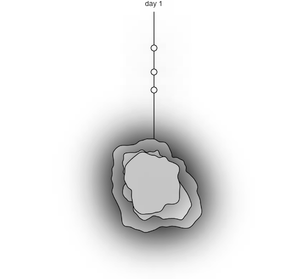

Data Portrait
A coding project aimed to document and visualize a piece of my personally tracked data
Project Details
I was tasked with personally collecting a week of personal data about myself and representing it however I liked using p5.js, the JavaScript library for creative coding. I took inspiration from peers and other projects online and decided to attempt to visualize my anxious habit of playing with my hair. I tallied how many times each day I played with my hair out of nervous habit and drew it out physically until I had a result I was interested in turning into code. The data points can be seen as the user interacts with space around the center blob. The center blob can be changed using sliders at the bottom and is meant to further visualize how anxiety fluctuates and changes for me throughout the week.
Image Gallery

Data points can be spotted across the line extending from the center bubbles. They are uneven to represent the randomness of my anxiety's random spikes.>
 Give your image a caption. People love context.
Give your image a caption. People love context.
 Give your image a caption. People love context.
Give your image a caption. People love context.